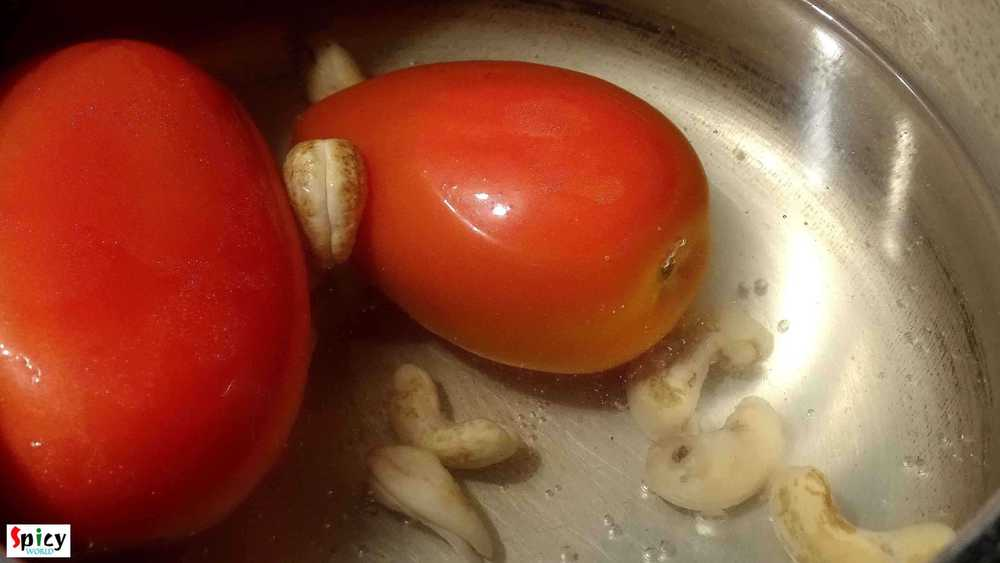
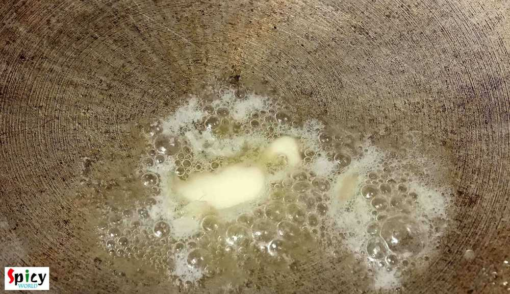
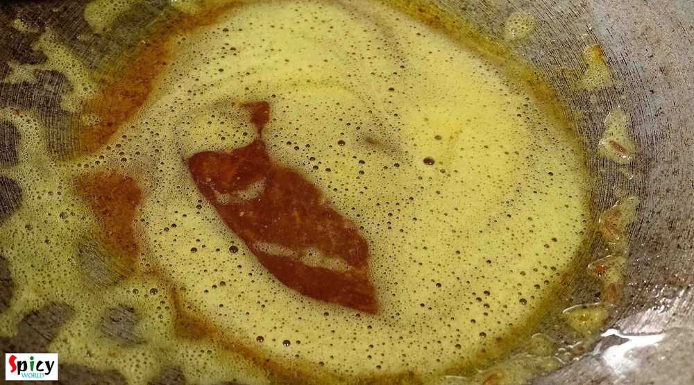
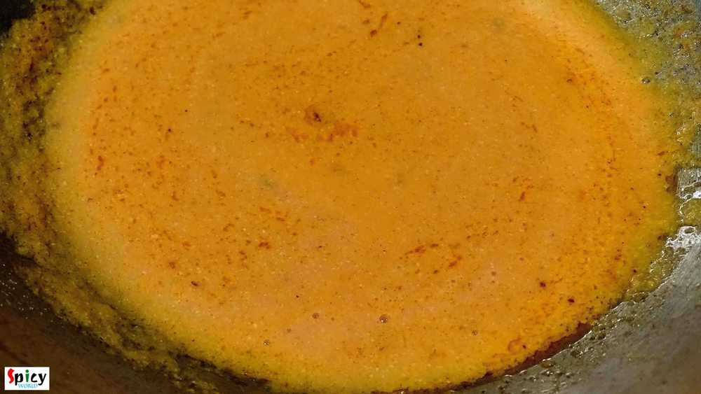
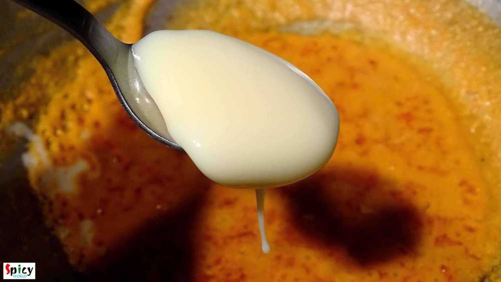
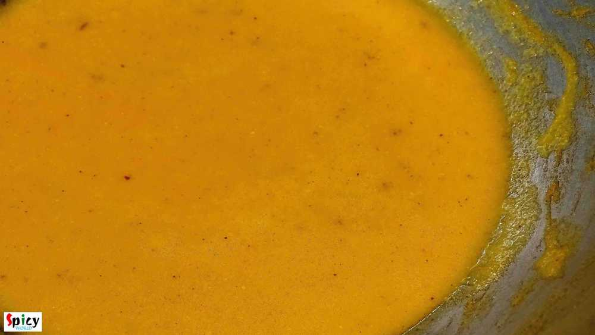
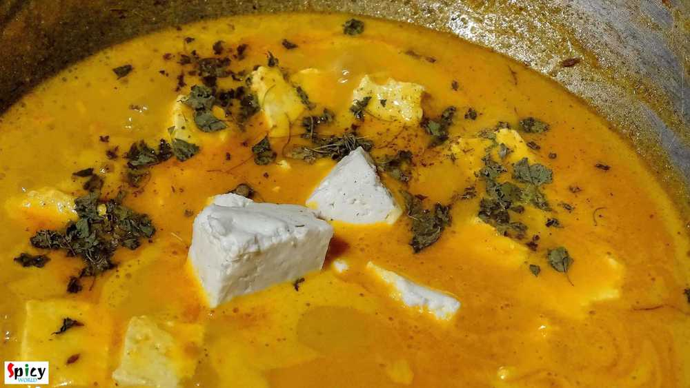
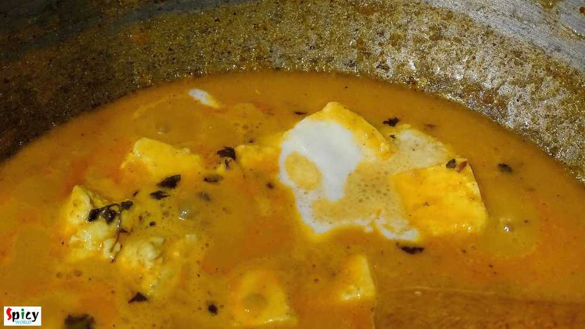
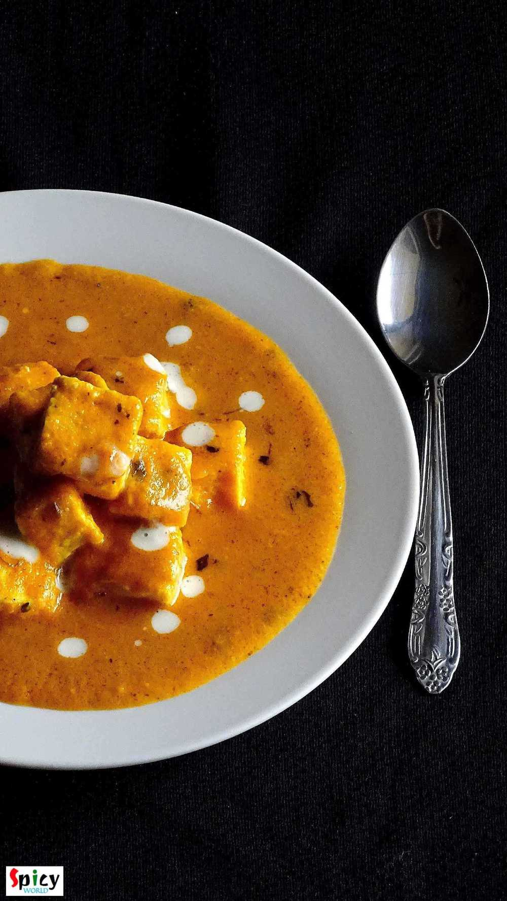

Simple and Easy Recipes
Paneer Makhani / Paneer Butter Masala / Makhanwala Paneer
© 2016 Spicy World, Published on: Dec 7, 2015
'Makhni' is a name of rich, smooth, creamy gravy which is very popular in India. You can make 'chicken makhni', 'paneer makhni', 'kofta curry' and many more dishes with this gravy. I personally love the methi flavour and creaminess about this gravy. We had it in dinner last night with soft butter naans. The combination was heavenly. You just have to try this.

Ingredients
- 12-15 cubes of paneer.
- 2 large tomato.
- 10 cashews.
- 1 inch ginger.
- 2 green chilies.
- half Teaspoon cumin seeds.
- Turmeric powder 1 Teaspoon.
- Red chilli powder 1 Teaspoon
- Kashmiri red chilli powder 1 Teaspoon.
- Garam masala powder 2 Teaspoons.
- dry fenugreek leaves (kasuri methi) 2 Teaspoons.
- 4 Tablespoons of heavy cream.
- 2 Teaspoons condensed milk.
- Salt as per your taste.
- half cup of hot water.
- Butter 2 Teaspoon.
- 3 Tablespoons of white oil.

Steps
Put the cashews in some boiling water. Boil them for 2 minutes and then add 2 large tomatoes.
Boil them another 3 minutes and discard the water. You can easily peel the skin of the tomatoes.
Make a paste of tomatoes, cashews, ginger, green chilies with little water. Keep it aside.
Heat 2 Teaspoons butter and 3 Tablespoons of oil in a pan.
After melting the butter add cumin seeds, turmeric powder, garam masala, red chilli and kashmiri red chilli powder. Saute it for 2 minutes in slow flame.
Then add tomato paste and 1 Teaspoon of salt. Stir well. Cook this with lid for 15 minutes in medium slow flame.
When the oil starts separating add the condensed milk. You can surely add sugar instead of this. Mix this well.
Add little warm water and cook this in medium heat for 7 minutes.
Add the paneer cubes and kasuri methi into the gravy. Cover the pan and cook it for 3 minutes in medium flame.
Then check the gravy. It should be medium thick like the picture.
Add cream and little more dry fenugreek leaves. Mix it.
Finally add 1 Teaspoon butter and turn off your gas.
Your Paneer Makhani is ready.
Serve hot with roti, naan, kulcha and pulao.
")